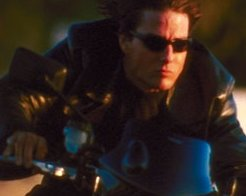

|

Clique aqui
para visitar o
Acervo de colunas


|
Jornada nas Estrelas e a guerra O poder de uma civilizao no est em promover a guerra, mas em manter a paz (Gene Roddenberry)
Ao longo do tempo, o cinema foi um dos meios mais importantes no destaque da guerra, de modo ficcional ou realista. Entretanto, nunca vimos as estrias de Jornada envolvidas diretamente com estes temas, pois o futuro desenhado por Roddenberry para a humanidade essencialmente pacifista. A Primeira Diretriz, com o seu impedimento de no-interveno, uma crtica aos pases que, sutilmente ou pela fora, impem seus interesses aos demais. Por isso, a manuteno da Frota Estelar pela Federao dos Planetas Unidos explicitamente de objetivos diplomticos e pacifistas. As suas naves possuem armas apenas para defesa contra ataque inimigo (como acontece em pases iguais ao Brasil), pois o objetivo no conquista, e sim, tratar de construir cooperao e alianas de interesse mtuo. A prpria FPU um Estado multirracial, multicultural e multiplanetrio, que valoriza a diversidade dentro de alguns limites estabelecidos. No vimos at hoje, no cinema e na televiso, nenhuma guerra de conquista, a no ser quando h invaso de territrio e soberania, conforme vimos em DS9. Alm disso, uma ou outra rusga ou crise poltico-estratgica, sem resultados mais graves. O prprio smbolo original da Federao uma aluso explcita ao da ONU, que tenta estabelecer a paz no mundo atravs da negociao e, em ltimo caso, da fora, quando a paz est ameaada. Neste mundo, onde vemos o USS Enterprise se preparando para mais uma guerra, pensamos no futuro e na possibilidade de que a humanidade seja diferente. Pelo que sabemos, Nemesis vem a e tambm no teremos esse tipo de problema, ao contrrio de boa parte da tradio do cinema, que apela para uma receita militarista e guerreira por causa dos efeitos especiais, da propaganda ideolgica e do retorno financeiro fcil na bilheteria. A fico cientfica holywoodiana tem grandes exemplos de maniquesmo poltico-militar com menor qualidade de roteiro: a trilogia de G. Lucas, Guerra nas Estrelas, produzida pela Fox, bastante clara acerca dos amigos e inimigos. Os amigos so uma federao, os inimigos formam um imprio tirnico que pretende dominar a galxia. A inteno, segundo o autor/diretor, era de promover puro entretenimento, no possuindo qualquer mensagem mais pretensiosa A anlise de muitos prope que uma estria deste tipo refora os mitos na cultura moderna., mas aqui importa notar tambm como sua esttica futurista de videogame promove um autntico bang-bang sideral, ressalta o herosmo e o voluntarismo dos jovens junto com suas habilidades tcnicas e formao moral. Este o caso de Skywalker e Solo ao se insurgirem contra o poder, de forma espontnea e improvisada, para derrotar os representantes do Imprio do Mal. Este tipo de representao se identificou tanto com a ideologia estado-unidense que o governo Reagan batizou o seu projeto de defesa aeroespacial com o nome da trilogia. A fico teve gosto de realidade ainda mais porque o Pentgono contribuiu para o colapso da economia sovitica, que no tinha condies oramentrias de fazer frente aos seus concorrentes de Washington. Os anos 80 seguiram a situao geral, tendo sofrido a influncia do fim e da Guerra Fria, com o surgimento de novos inimigos da paz e da liberdade mundial segundo a lgica do Pentgono. Desta vez, Holywood retrata a presena dos terroristas rabes, iraquianos, indianos, paquistaneses e latino-americanos. Com a crise do Oriente Mdio se agravando e ameaando os interesses de Washington, proliferaram Rambo e outros heris da truculncia que agiam em conjunto com o aparato militar e paramilitar das FFAA dos EUA. Os asiticos e os povos da Europa Oriental tambm no escaparam ao esteretipo, pois o crescimento da China passou a desequilibrar o sistema poltico internacional, compensando a falta de outra superpotncia. Os europeus ex-comunistas constituem uma ameaa pelo fato de possurem arsenais nucleares de destruio massiva. Srvios, cazaquistanos, urbequistanos e at mesmo alguns russos infiis ao Ocidente poderiam por tudo a perder, desde o lucro das corporaes vida do presidente, segundo o exemplo de filmes como Caada ao Outubro Vermelho, Fora Area Um.  A
partir de meados dos anos 80 os EUA presenciaram a emerso da
mentalidade da cultura da reclamao, baseada na tica do
politicamente correto. Ela chegou s telas do cinema e da
televiso com uma atitude revisionista: o passado teria que ser
relido para ser interpretado de forma mais esclarecedora e crtica.
Questes multiculturais e das minorias sociais envolveram a aura da
produo nos EUA e parte da Europa. Do mesmo modo, o cultivo do
herosmo ptrio, triunfante e salvacionista deveria ser revisto.
Prximo da linha que Roddenberry enfatizou a partir dos anos 60,
Kubrik, Lee, Stone, Hanks e Spilberg propuseram atravs dos
roteiros, uma crtica ao papel desempenhado pelos EUA e suas FFAA
ao longo da Histria. A partir de ento, a Segunda Guerra, o Vietn,
a Coria, o escndalo Ir-contras e mesmo a Guerra do Golfo
passam pelo crivo do respeito diversidade tnico-cultural,
direitos humanos incorporados por vrias subculturas, conflitos polticos
entre o povo e a elite etc. Os soldados do USARMY, USN e USAF,
agiram e agem em nome dos interesses da elite branca, rica e
protestante no muito bem justificados. Assim, houve uma onda de
produes crticas ao status quo poltico-governamental em
filmes como Apocalipse Now,
Platoon, Nascido em 4 de Julho e Nascido para Matar. Este
sentimento tambm est expresso em O
Soldado Ryan, Alm da Linha Vermelha e Trs Reis. As prprias minorias, que tambm sofreram historicamente no interior da sociedade, tambm teriam sido usadas como tropa para massacrar ou subjulgar regies de seu passado tnico e os pobres do Terceiro Mundo. A partir de ento, heris ousados, cheios de honra e senso moral foram revelados por personagens negros, hispnicos, asiticos, mulheres, homossexuais e indgenas. O exemplo das mulheres interessante, pois elas passaram a ter mais presena. Elas passam de frgeis ajudantes que atrapalham na hora da ao ou da fuga de um grupo para a posio de lderes, comandantes e autoridades polticas, capazes de realizarem as misses mais complexas, anteriormente destinadas s aos homens. As virtudes deixaram de ser computadas apenas pela genitlia e pelo tnus muscular, para serem considerados segundo critrios de inteligncia, criatividade e sensibilidade, convencionalmente mais afetas ao mundo feminino. Enfim, a mquina de guerra dos EUA precisa estar sempre pronta a operar nos quatro cantos do Mundo, salvaguardando os interesses do pas dentro e (muito mais) fora de seu territrio, a despeito de quaisquer interesses econmicos, polticos e culturais. O cinema e a televiso funcionaram como formas de legitimao na maioria dos casos. Embora a prpria indstria cultural reserve um espao para a crtica, esta acaba funcionando como a inveno que refora o padro vigente. Com a prosperidade econmica dos EUA dos anos do neoliberalismo global, a propaganda dessa mquina tende a se manter para mostrar a fora e o poderio de que dispe o pas para conter eventuais ameaas. Mas, ao mesmo tempo, necessrio deixar claro um sentimento de boa vontade e cooperao, j que um risco constante o de explicitar pretenses belicistas e arrogantes quanto sua superioridade auto-atribuda. Caso
vejamos algum dia um filme de Jornada que descambe para esse
tipo de contedo militarista, poderemos passar a desconfiar
seriamente de que a utopia pacifista de seu criador ser posta de
lado em nome de interesses escusos. Da, s nos restar pular
dentro dos casulos de salvamento. Cludio Silveira escreve regularmente sobre os filmes com exclusividade para o Trek Brasilis |
 A
existncia da guerra uma das responsveis pela criao de Jornada
na Estrelas. Nos anos 60, o mundo passava por uma situao
extremamente complexa por causa da Guerra Fria. Hoje, estamos
vivendo num clima de acirramento dos conflitos regionais e mundiais
por causa de diferenas econmicas, polticas e culturais. Depois
de 11 de setembro, o ambiente belicista aumentou bastante. Falam de
guerra contra o terrorismo seja no Afeganisto, seja no
Iraque; assim, o mundo caminha para uma situao cada vez mais
complexa, e no sabemos onde isso vai dar.
A
existncia da guerra uma das responsveis pela criao de Jornada
na Estrelas. Nos anos 60, o mundo passava por uma situao
extremamente complexa por causa da Guerra Fria. Hoje, estamos
vivendo num clima de acirramento dos conflitos regionais e mundiais
por causa de diferenas econmicas, polticas e culturais. Depois
de 11 de setembro, o ambiente belicista aumentou bastante. Falam de
guerra contra o terrorismo seja no Afeganisto, seja no
Iraque; assim, o mundo caminha para uma situao cada vez mais
complexa, e no sabemos onde isso vai dar.